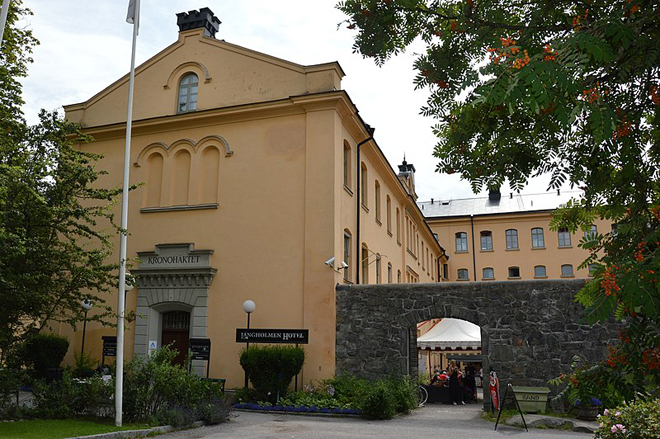
A work trip to Stockholm for meetings with the Drottningholm Opera and Svenska Rikskonserter. Bizarrely, I stayed in a hotel which had been converted from a prison ...
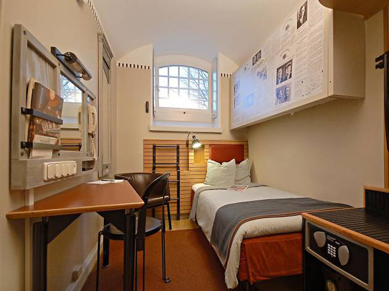
Stockholm city centre was smart and very business-orientated - but very cold!
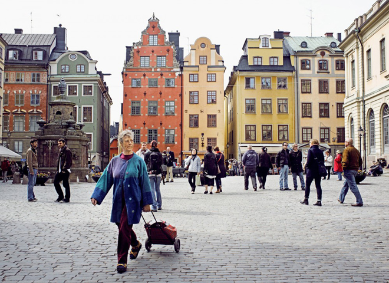
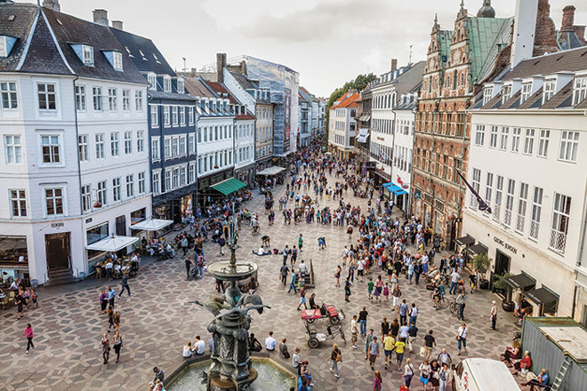
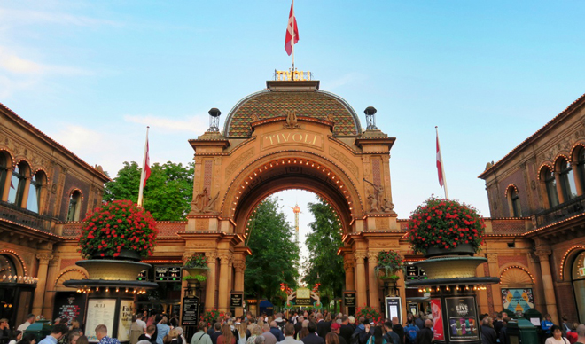
The Tivoli Gardens are a world-famous amusement park and pleasure garden. The park opened on 15 August 1843 and is the third-oldest operating amusement park in the world, after Dyrehavsbakken in nearby Klampenborg, also in Denmark, and Wurstelprater in Vienna.
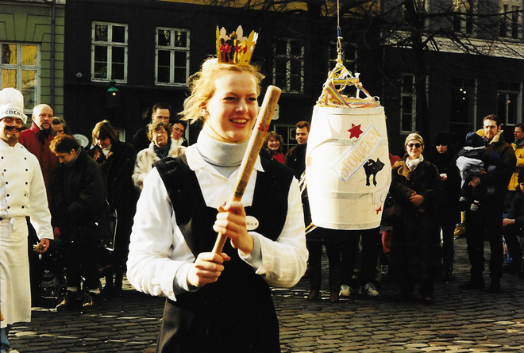
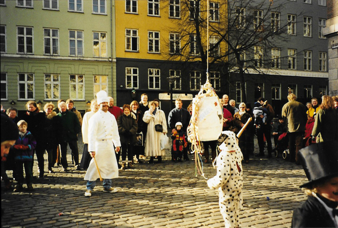
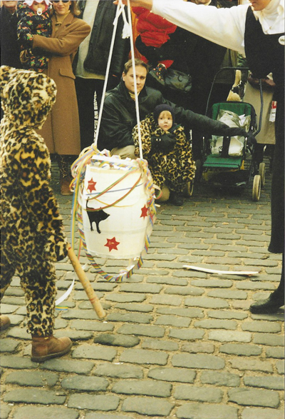
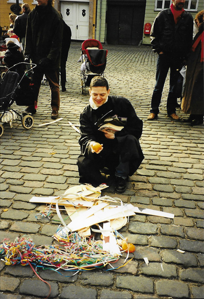
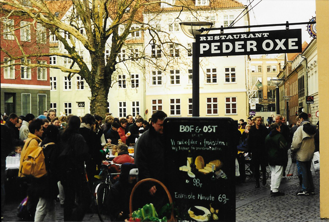
Our final night in Copenhagen was spent at Det Kongelige Teater (Old Stage) to see Poulenc's Dialogues of the Carmelites.
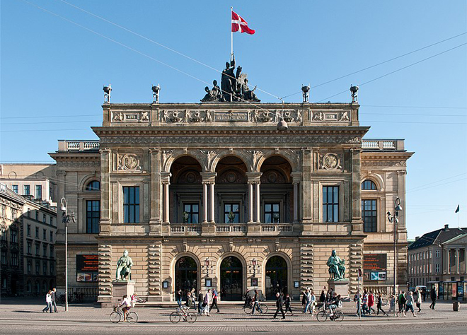